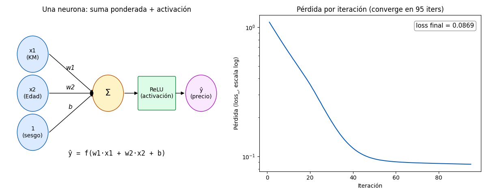

Bloque H · RNA en el análisis de datos · Lección 0053 · mié 25 nov
La neurona y el MLP: tu primer precio predicho por una red
Win de hoy: una neurona es una suma ponderada más una activación que la dobla; 20 neuronas en una capa oculta predicen Price desde KM y Edad con R² 0,83 en train y 0,82 en test. Y la lección gratis del día: sin escalar, la misma red explota (R² −3,29 con miles de warnings).
1 · Qué es una RNA en una frase
Una RNA es muchas neuronas chiquitas que aprenden de ejemplos. Cada neurona hace solo dos cosas: primero una suma ponderada de sus entradas, después pasa ese resultado por una función de activación que la dobla. En símbolos, con dos entradas (KM y Edad): ŷ = f(w1·x1 + w2·x2 + b). Los pesos (w1, w2) dicen cuánto pesa cada entrada, y el sesgo (b) corre el total aunque las entradas valgan cero. Pesos y sesgo no se eligen a mano: la red los aprende (§2).
¿Por qué la activación f? Sin ella, la neurona sería una regresión lineal más (la de la lección 0003), y apilar lineales sobre lineales seguiría siendo lineal. La activación es lo que le da a la red su poder: doblar rectas para seguir curvas. Ya conocés una: la sigmoide de la lección 0034, la S que aplasta cualquier número al rango 0–1 — ahora reaparece como activación. La otra que importa hoy es la ReLU: deja pasar lo positivo y corta lo negativo en cero. Dos líneas y listo: es la activación por defecto del §3 porque es barata y casi nunca se rompe.
2 · El MLP, capa por capa
El MLP (perceptrón multicapa) es la RNA más simple que sirve para datos tabulares como Toyota: tres pisos de neuronas. Entrada: una neurona por feature (KM y Edad, estandarizados — el §3 muestra por qué es obligatorio). Capa oculta: N neuronas ReLU que mezclan las entradas de N maneras distintas; es oculta porque nadie le dice qué debe valer: la red inventa ahí adentro las combinaciones que le sirven. Salida: una neurona que junta todo y escupe el precio. Dibujo mental: 2 → 20 → 1.
¿Cómo aprende? En tres líneas, sin matemática. 1) Forward: un auto viaja de izquierda a derecha y sale una predicción (al principio, pésima). 2) Se compara con el precio real y se mide el error. 3) Backprop: el error se reparte hacia atrás, ajustando cada peso un poquito en la dirección que lo achica. Repetir miles de veces con los 1436 autos hasta que el error deja de bajar: eso es entrenar (§4 muestra la curva).
3 · Demo runnable: MLP sobre Toyota (~19 líneas)
Todo con sklearn (en el stack del curso): StandardScaler + MLPRegressor con una capa
oculta de 20 neuronas, prediciendo Price con KM y Edad. Dos decisiones documentadas: escalo X y
también Price (anda por los miles y los gradientes explotan igual), y max_iter=2000 es un techo —
la red frena sola cuando la mejora se achica (verdad: convergió en 95 iteraciones).
import pandas as pd
from sklearn.model_selection import train_test_split
from sklearn.preprocessing import StandardScaler
from sklearn.neural_network import MLPRegressor
df = pd.read_csv("../ToyotaCorolla.csv")
X = df[["KM", "Age_08_04"]].values
y = df["Price"].values
Xtr, Xte, ytr, yte = train_test_split(X, y, test_size=0.2, random_state=42)
sc = StandardScaler().fit(Xtr) # Xs: sin esto explota
sy = StandardScaler().fit(ytr.reshape(-1, 1)) # Price igual
Xtr_s = sc.transform(Xtr)
Xte_s = sc.transform(Xte)
ytr_s = sy.transform(ytr.reshape(-1, 1)).ravel()
yte_s = sy.transform(yte.reshape(-1, 1)).ravel()
mlp = MLPRegressor(hidden_layer_sizes=(20,), max_iter=2000, random_state=42)
mlp.fit(Xtr_s, ytr_s)
print("iters:", mlp.n_iter_, "| loss final:", round(float(mlp.loss_), 4))
print("R² train:", round(mlp.score(Xtr_s, ytr_s), 4))
print("R² test:", round(mlp.score(Xte_s, yte_s), 4))Salida real (semilla 42, split 80/20): iters: 95 | loss final: 0.0869,
R² train: 0.8263, R² test: 0.8185. Línea honesta: la regresión lineal con las mismas 2
features da R² 0,79/0,78 — con 2 features el lineal de la
lección 0003 compite; el MLP brilla cuando la relación se tuerce
(no-linealidad de verdad, no este caso casi-recto).
La enseñanza del día: el mismo código sin escalar escupe miles de
RuntimeWarning (overflow en las multiplicaciones), frena a las 32 iteraciones con loss 28,7 millones y
termina en R² −3,38/−3,29 — peor que predecir siempre la media. Ojo honesto: con scaler también aparecen warnings
sueltos al inicio (este entorno avisa mucho), pero la red igual converge — 95 iters, loss 0,0869, R² 0,83/0,82 —,
mientras que sin scaler diverge y frena rota. Moraleja: los Xs de la
lección 0028 §4 (un voto por variable) y la
lección 0029 valen otra vez acá: el MLP vive de comparar magnitudes, y KM
crudo (~70.000) aplasta a todo lo demás.
4 · Figura: la neurona y su curva de aprendizaje

Regenerar la figura (mismo resultado versionado en assets/img/toyota/):
python3 scripts/make_figures.py --only neurona-mlp-precio5 · Quiz (auto-chequeo inmediato)
6 · Fuente primaria y cierre
Para profundizar (1 fuente + docs): James, Witten, Hastie & Tibshirani, An Introduction to Statistical Learning — cap. 10 (redes neuronales). Secundaria: docs de sklearn (MLPRegressor). Más contexto en RESOURCES.
Cierre: neurona (§1) → MLP capa por capa (§2) → precio Toyota con R² 0,82 (§3–§4). Siguiente: 0054 (mar 1 dic: arquitecturas, overfitting y cuándo usar cada una).